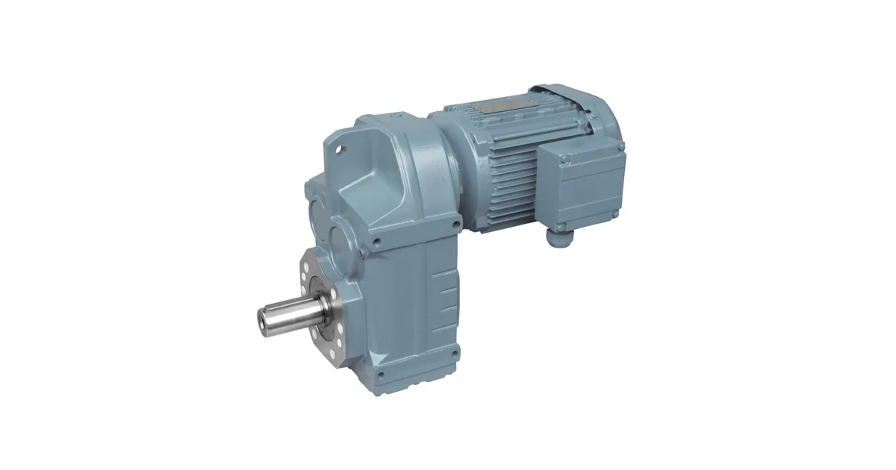

Собственное производствоПромышленные редукторы для производителей оборудования•Отгрузка по всей России•Аналоги SEW, NORD, Bonfiglioli без переделки рамы•Расчёт и КП за 15 минут•Гарантия 36 месяцевПромышленные редукторы для производителей оборудования•Отгрузка по всей России•Аналоги SEW, NORD, Bonfiglioli без переделки рамы•Расчёт и КП за 15 минут•Гарантия 36 месяцев
Главная›Блог›Типоразмерный ряд Flender: серии и обозначения
Справочник
Типоразмерный ряд Flender: серии и обозначения
Опыт инженеров Завода Редукторов · чтение ~8 минут
Немецкая марка Flender выпускает редукторы серий H, B и K. Серии H — цилиндрические, B — коническо-цилиндрические, K — коническо-цилиндрические с иной компоновкой. Чтобы подобрать замену нашей марки ZR, сначала нужно разобраться в обозначениях и понять, какие данные производитель публикует открыто, а какие нет.
Сразу о главном. Готовой таблицы «модель Flender → типоразмер ZR» мы не публикуем и не выводим её из каталога производителя. Совпадение момента или номера типоразмера ничего не гарантирует: два редуктора с одинаковыми характеристиками могут не встать на одну плиту из-за разных присоединительных и габаритных размеров. Поэтому подбор ведёт инженер — по шильду, фотографии узла или габаритному чертежу. Наш аналог ZR считаем под конкретную задачу, цена — по запросу.
Что зашифровано в обозначении
Обозначение редуктора Flender строится по схеме: тип передачи, число ступеней, вид выходного вала, монтажное исполнение и типоразмер. Например, B3SH11 — это коническо-цилиндрический редуктор, три ступени, сплошной вал, горизонтальный монтаж, типоразмер одиннадцать. По одной букве и цифре можно понять компоновку, но не присоединительные размеры.
Буквенный код серии указывает на тип передачи: соосная, с параллельными валами, коническо-цилиндрическая с перпендикулярными осями или червячная. Цифра рядом — номер корпуса: чем больше, тем крупнее редуктор и выше момент. Дополнительные буквы кодируют крепление: на лапах, на фланце, с полым валом, с торсионной опорой. Именно эта часть обозначения чаще всего решает, встанет ли редуктор на существующее место.
Линейка: что именно выпускает производитель
Цилиндрические серии H различаются числом ступеней. H1 — одноступенчатые, H2 — двухступенчатые, H3 — трёхступенчатые, H4 — четырёхступенчатые. Коническо-цилиндрические серии B включают B2, B3 и B4 с двумя, тремя и четырьмя ступенями соответственно. Серия K — коническо-цилиндрические редукторы в разъёмном корпусе. Диапазоны момента и передаточного числа указаны в каталоге производителя.
Признак на шильде или узле → что уточнить → действие
Признак
Что уточнить
Действие
Серия и типоразмер
Ряд опубликован поимённо
Сверить с каталогом, запросить чертёж
Только диапазон серии
Типоразмер не опубликован
Запросить фото узла или замеры
Момент и передаточное число
Присоединительные размеры
Проверить встанет ли на раму
Монтажное положение
Крепление: лапы, фланец, полый вал
Уточнить по чертежу
Шильд нечитаем
Диаметр и длина вала, фланец, межосевые
Снять размеры, прислать фото
Где заканчиваются достоверные данные
По ряду серий каталог даёт поимённый перечень типоразмеров. H1: H1-03, H1-05, H1-07, H1-09, H1-11, H1-13. H2: от H2-03 до H2-14. H3: от H3-05 до H3-14. H4: от H4-07 до H4-14. B2: от B2-04 до B2-14. B3: от B3-03 до B3-14. B4: от B4-05 до B4-14.
По остальным сериям в каталоге опубликован только диапазон, поэтому мы не достраиваем ряд самостоятельно. Придумать несуществующий типоразмер хуже, чем его не назвать. Это принципиальная позиция: в техническом подборе неточность хуже пробела.

Редуктор Flender: коническо-цилиндрический исполнение
Как читать шильд и что присылать
На шильде Flender обычно указаны обозначение серии и типоразмера, передаточное число, мощность или момент, монтажное положение и заводской номер. Этого набора достаточно, чтобы инженер определил геометрию и посчитал аналог ZR. Если табличка закрашена или стёрта, работаем по замерам: диаметр и длина выходного вала, фланец, межосевые расстояния лап, высота оси.
Пришлите фотографию узла целиком — часто по компоновке серия определяется сразу. Чем больше данных, тем точнее подбор.
Шильд: с него начинается подбор
Чем отвечаем мы
Завод Редукторов (Челябинск) производит цилиндрические, коническо-цилиндрические, червячные и планетарные редукторы серии ZR, а также классические ГОСТ-серии: Ц2У, РМ, РЦД, Ч, МЧ, 1Ц3У. Для большинства промышленных приводов это позволяет закрыть импортный типоразмер без переделки рамы или с переходной плитой.
Подобрать по параметрам можно самостоятельно в калькуляторе, а посмотреть готовые страницы замен — в разделе импортозамещения. Если нужного типоразмера нет в списке, пришлите обозначение с шильда: у производителя бывают специальные и заказные исполнения.
Какие данные собрать перед заказом
Что нужно инженеру для подбора и где это взять
Параметр
Где взять
Зачем нужен
Полное обозначение с шильда
табличка на корпусе редуктора
определяет серию Flender и типоразмер
Мощность и обороты двигателя
шильд двигателя или паспорт привода
задаёт входную ступень и запас
Обороты на выходе
технолог или расчёт по механизму
через них считается передаточное число
Монтажное положение
по факту установки на объекте
определяет уровень масла и расположение пробок
Присоединительные размеры
замер или габаритный чертёж
главное условие взаимозаменяемости
Характер нагрузки и режим
технолог, паспорт механизма
через него выбирается сервис-фактор
Доставка, оплата и гарантия
Отгружаем по всей России транспортными компаниями, самовывоз — со склада в Челябинске. Оплата по счёту для юридических лиц, для новых клиентов возможна частичная предоплата. На изделия собственного производства ZR даём гарантию 36 месяцев и передаём паспорт с фактическими параметрами. Условия и сроки — на страницах доставки и цен: конкретную стоимость называем после подбора, потому что она зависит от исполнения, передаточного числа и комплектации двигателем.
Не уверены в подборе? Пришлите фото шильдика на zr@zavod-red.ru — инженер прочитает обозначение, сверит присоединительные размеры и пришлёт расчёт. Или соберите вариант сами в калькуляторе подбора: там задаются диапазоны по мощности, оборотам, моменту и передаточному числу.
Частые вопросы
Где взять полный каталог Flender?
У производителя и его дистрибьюторов. Мы приводим состав линейки по открытому каталогу и указываем, где ряд типоразмеров опубликован поимённо, а где нет.
Что делать, если моей серии нет в списке?
Пришлите обозначение с шильда. Список отражает основную линейку, у производителя бывают специальные и заказные исполнения.
Можно ли по типоразмеру сразу назвать аналог ZR?
Нет. Совпадение номера типоразмера ничего не гарантирует — нужны присоединительные размеры. Их и проверяет инженер.
Цифра в обозначении — это момент?
Обычно нет, это номер корпуса в ряду. Момент смотрится по каталогу для конкретного передаточного числа.
Есть ли у вас карточки по типоразмерам этой марки?
Да, по сериям с опубликованным рядом мы собрали отдельные страницы — они доступны из калькулятора при выборе марки.
Возите ли вы оригинал?
Да, под заказ. Параллельно считаем аналог ZR — сравните срок и цену, решение за вами.